France · Tier VIII
All nations and tiers · EU v20410 → RU v14600ru · 3 November 2026
AltProto AMX 30 · Tier VIII
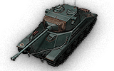
Firepower
DPM (HP/min) EU 2 086  RU 1 877.40
RU 1 877.40
Rate of fire (rounds/min) EU 6.95 RU 6.26
Reload time (s) EU 8.63 RU 9.59
Gun handling
Dispersion · turret traverse EU 0.12 RU 0.20
Mobility
Turret traverse (°/s) EU 43.81 RU 39.63
Tank traverse (°/s) EU 41.72 RU 35.46
Tank traverse on hard terrain (°/s) EU 39.63 RU 33.69
Tank traverse on medium terrain (°/s) EU 36.03 RU 30.63
Tank traverse on soft terrain (°/s) EU 18.87 RU 16.04
AMX 50 100 · Tier VIII
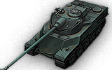
Firepower
DPM (HP/min) EU 2 010.15 RU 1 914.55
Rate of fire (rounds/min) EU 6.70 RU 6.38
Reload time (s) EU 41.23 RU 42.77
Clip damage · time (s) EU 12.50 RU 13.64
Intra-clip reload EU 2.50 RU 2.73
Gun handling
Aim time (s) EU 2.40 RU 2.49
Dispersion (m/100 m) EU 0.35  RU 0.33
RU 0.33
Dispersion · damaged EU 0.69 RU 0.65
Dispersion · turret traverse EU 0.12 RU 0.14
Dispersion · firing EU 3 RU 4
Mobility
Forward speed (km/h) EU 55 RU 51
Forward speed on hard terrain (km/h) EU 55 RU 51
Forward speed on medium terrain (km/h) EU 53.94 RU 51
Forward speed on soft terrain (km/h) EU 33.39 RU 32.62
Engine power (hp) EU 920 RU 898.69
Power/weight (hp/t) EU 18.43 RU 18
Tank traverse (°/s) EU 54.24 RU 33.38
Tank traverse on hard terrain (°/s) EU 58.41 RU 48.52
Tank traverse on medium terrain (°/s) EU 53.92 RU 44.79
Tank traverse on soft terrain (°/s) EU 33.38 RU 27.72
AMX 65 t · Tier VIII
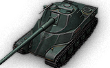
Penetration (mm)
EU  AP 225 /
AP 225 /  APCR 252 /
APCR 252 /  HE 65 → RU
HE 65 → RU  AP 236 /
AP 236 /  APCR 267 /
APCR 267 /  HE 65
HE 65
Damage (HP)
EU  AP 420 /
AP 420 /  APCR 420 /
APCR 420 /  HE 530 → RU
HE 530 → RU  AP 400 /
AP 400 /  APCR 400 /
APCR 400 /  HE 515
HE 515
Firepower
DPM (HP/min) EU 2 037.49 RU 2 086
Rate of fire (rounds/min) EU 4.85 RU 5.21
Reload time (s) EU 12.37 RU 11.51
Potential damage EU 16 800 RU 16 000
Gun handling
Aim time (s) EU 2.21 RU 2.40
Dispersion · turret traverse EU 0.12 RU 0.14
Depression (°) EU 8 RU 10
Mobility
Forward speed on hard terrain (km/h) EU 35 RU 30.74
Forward speed on medium terrain (km/h) EU 35 RU 27.32
Forward speed on soft terrain (km/h) EU 28.11 RU 19.67
Engine power (hp) EU 1 200 RU 1 050
Power/weight (hp/t) EU 18.46 RU 16.15
Terrain resist (hard) EU 1.53 RU 1.92
Terrain resist (med) EU 1.73 RU 2.16
Terrain resist (soft) EU 2.40 RU 3
Tank traverse (°/s) EU 31.29 RU 27.12
Tank traverse on hard terrain (°/s) EU 35.80 RU 33.81
Tank traverse on medium terrain (°/s) EU 31.82 RU 30.05
Tank traverse on soft terrain (°/s) EU 22.91 RU 21.64
Armor & health
Hull armor · front (mm) EU 115 RU 135
Hull armor · rear (mm) EU 60 RU 80
Health EU 1 700 RU 1 600
AMX AC mle. 48 · Tier VIII
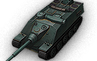
Firepower
DPM (HP/min) EU 1 914.98 RU 2 107.20
Rate of fire (rounds/min) EU 4.79 RU 5.27
Reload time (s) EU 32.60 RU 28.76
Clip damage · time (s) EU 5 RU 5.41
Intra-clip reload EU 2.50 RU 2.70
Gun handling
Aim time (s) EU 2.49 RU 2.40
Dispersion (m/100 m) EU 0.35 RU 0.34
Dispersion · damaged EU 0.69 RU 0.67
Dispersion · moving EU 0.17 RU 0.20
Dispersion · tank traverse EU 0.17 RU 0.20
Dispersion · turret traverse EU 0.10 RU 0.14
Mobility
Forward speed on medium terrain (km/h) EU 49.98 RU 48.30
Forward speed on soft terrain (km/h) EU 29.16 RU 28.18
Reverse speed (km/h) EU 15 RU 18
Engine power (hp) EU 930 RU 898.69
Power/weight (hp/t) EU 18.39 RU 17.77
Tank traverse (°/s) EU 45.89 RU 29.20
Tank traverse on hard terrain (°/s) EU 46.07 RU 40.32
Tank traverse on medium terrain (°/s) EU 42.78 RU 37.44
Tank traverse on soft terrain (°/s) EU 24.95 RU 21.84
Armor & health
Health EU 1 300 RU 1 250
AMX AC mle. 48 FL · Tier VIII

Firepower
DPM (HP/min) EU 1 914.98 RU 2 107.20
Rate of fire (rounds/min) EU 4.79 RU 5.27
Reload time (s) EU 32.60 RU 28.76
Clip damage · time (s) EU 5 RU 5.41
Intra-clip reload EU 2.50 RU 2.70
Gun handling
Aim time (s) EU 2.49 RU 2.40
Dispersion (m/100 m) EU 0.35 RU 0.34
Dispersion · damaged EU 0.69 RU 0.67
Dispersion · moving EU 0.17 RU 0.20
Dispersion · tank traverse EU 0.17 RU 0.20
Dispersion · turret traverse EU 0.10 RU 0.14
Mobility
Forward speed on medium terrain (km/h) EU 49.98 RU 48.30
Forward speed on soft terrain (km/h) EU 29.16 RU 28.18
Reverse speed (km/h) EU 15 RU 18
Engine power (hp) EU 930 RU 898.69
Power/weight (hp/t) EU 18.39 RU 17.77
Tank traverse (°/s) EU 45.89 RU 29.20
Tank traverse on hard terrain (°/s) EU 43.60 RU 27.74
Tank traverse on medium terrain (°/s) EU 40.48 RU 25.76
Tank traverse on soft terrain (°/s) EU 23.62 RU 15.03
Armor & health
Health EU 1 300 RU 1 250
AMX Canon d'assaut 105 · Tier VIII
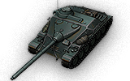
Firepower
DPM (HP/min) EU 2 302.47 RU 2 122.28
Rate of fire (rounds/min) EU 5.90 RU 5.44
Reload time (s) EU 10.16 RU 11.03
Gun handling
Aim time (s) EU 1.73 RU 1.92
Dispersion · moving EU 0.17 RU 0.22
Dispersion · tank traverse EU 0.17 RU 0.22
Armor & health
Health EU 1 200 RU 1 000
AMX Chasseur de chars · Tier VIII
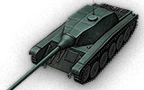
Firepower
DPM (HP/min) EU 2 057.42 RU 2 422.45
Rate of fire (rounds/min) EU 8.57 RU 10.09
Reload time (s) EU 7 RU 5.94
Gun handling
Dispersion · moving EU 0.16 RU 0.13
Dispersion · tank traverse EU 0.16 RU 0.13
Dispersion · turret traverse EU 0.10 RU 0.08
Mobility
Forward speed (km/h) EU 57 RU 65
Forward speed on hard terrain (km/h) EU 57 RU 65
Forward speed on medium terrain (km/h) EU 57 RU 65
AMX M4 mle. 49 · Tier VIII
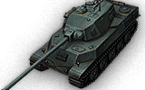
Firepower
DPM (HP/min) EU 1 822.72 RU 2 040.65
Rate of fire (rounds/min) EU 6.08 RU 6.80
Reload time (s) EU 9.88 RU 8.82
Gun handling
Aim time (s) EU 2.40 RU 2.21
AMX M4 mle. 49 FL · Tier VIII

Firepower
DPM (HP/min) EU 1 822.72 RU 2 040.65
Rate of fire (rounds/min) EU 6.08 RU 6.80
Reload time (s) EU 9.88 RU 8.82
Gun handling
Aim time (s) EU 2.40 RU 2.21
AMX M4 mle. 49 Liberté · Tier VIII
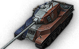
Firepower
DPM (HP/min) EU 1 822.72 RU 2 040.65
Rate of fire (rounds/min) EU 6.08 RU 6.80
Reload time (s) EU 9.88 RU 8.82
Gun handling
Aim time (s) EU 2.40 RU 2.21
Bat.-Châtillon 12 t · Tier VIII
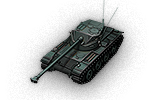
Penetration (mm)
EU  AP 180 /
AP 180 /  APCR 224 /
APCR 224 /  HE 38 → RU
HE 38 → RU  AP 185 /
AP 185 /  APCR 218 /
APCR 218 /  HE 38
HE 38
Damage (HP)
EU  AP 180 /
AP 180 /  APCR 180 /
APCR 180 /  HE 270 → RU
HE 270 → RU  AP 170 /
AP 170 /  APCR 170 /
APCR 170 /  HE 260
HE 260
Firepower
DPM (HP/min) EU 1 937.29 RU 2 069.03
Rate of fire (rounds/min) EU 10.76 RU 12.17
Reload time (s) EU 16.30 RU 19.58
Clip size EU 4 RU 6
Clip damage · damage EU 720 RU 1 020
Clip damage · time (s) EU 6 RU 10
Ammo capacity EU 52 RU 60
Potential damage EU 9 360 RU 10 200
Gun handling
Aim time (s) EU 1.92 RU 2.21
Dispersion (m/100 m) EU 0.37 RU 0.36
Dispersion · damaged EU 0.75 RU 0.73
Dispersion · turret traverse EU 0.10 RU 0.12
Dispersion · firing EU 4 RU 3.50
Mobility
Terrain resist (hard) EU 0.67 RU 0.84
Terrain resist (med) EU 0.77 RU 0.96
Terrain resist (soft) EU 1.34 RU 1.68
Tank traverse on hard terrain (°/s) EU 50.06 RU 54.85
Tank traverse on medium terrain (°/s) EU 43.81 RU 47.99
Tank traverse on soft terrain (°/s) EU 25.03 RU 27.42
Armor & health
Track armor EU 10 RU 20
Health EU 1 250 RU 1 000
Bat.-Châtillon Bourrasque · Tier VIII
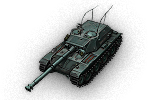
Firepower
DPM (HP/min) EU 1 870.70 RU 1 835.41
Rate of fire (rounds/min) EU 5.20 RU 5.10
Reload time (s) EU 21.09 RU 21.54
ELC EVEN 90 · Tier VIII

Firepower
DPM (HP/min) EU 1 172.88 RU 1 152.22
Rate of fire (rounds/min) EU 5.33 RU 5.24
Reload time (s) EU 28.76 RU 29.37
ELC EVEN 90 FL · Tier VIII
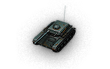
Firepower
DPM (HP/min) EU 1 172.88 RU 1 152.22
Rate of fire (rounds/min) EU 5.33 RU 5.24
Reload time (s) EU 28.76 RU 29.37
FCM 50 t · Tier VIII
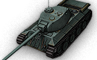
Firepower
DPM (HP/min) EU 2 589.52 RU 2 208.71
Rate of fire (rounds/min) EU 10.79 RU 9.20
Reload time (s) EU 5.56 RU 6.52
Gun handling
Aim time (s) EU 1.92 RU 2.21
Dispersion · moving EU 0.16 RU 0.20
Dispersion · tank traverse EU 0.16 RU 0.20
Dispersion · turret traverse EU 0.08 RU 0.12
Dispersion · firing EU 3.50 RU 4
Lorraine 155 mle. 51 · Tier VIII
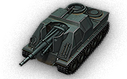
Penetration (mm) 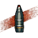
EU  HE 45 /
HE 45 /  AP 268 → RU HE 39 /
AP 268 → RU HE 39 /  AP 268
AP 268
Damage (HP)
EU  HE 680 / HE 830 /
HE 680 / HE 830 /  AP 460 → RU HE 900 /
AP 460 → RU HE 900 /  AP 500
AP 500
Firepower
DPM (HP/min) EU 1 418.48 RU 1 877.40
Explosion radius EU 7.60 RU 6.80
Stun duration · maximum (s) EU 27 → RU —
Stun duration · minimum (s) EU 12.15 → RU —
Shell velocity (m/s) EU 475 RU 490
Max range (m) EU 1 367.42 RU 1 412.35
Potential damage EU 19 040 RU 25 200
Mobility
Tank traverse on hard terrain (°/s) EU 32.40 RU 32.42
Tank traverse on medium terrain (°/s) EU 27.77 RU 27.79
Tank traverse on soft terrain (°/s) EU 16.90 RU 16.91
Armor & health
Health · track EU 220 RU 130
Health · ammo rack EU 210 RU 120
Track repair time (s) EU 11.70 RU 12.44
Miscellaneous
Shell cost EU 1 120 RU 1 330
Lorraine 40 t · Tier VIII
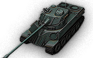
Firepower
DPM (HP/min) EU 1 713.64 RU 1 854.40
Rate of fire (rounds/min) EU 5.71 RU 6.18
Reload time (s) EU 34.52 RU 31.33
Gun handling
Aim time (s) EU 2.59 RU 2.40
Dispersion (m/100 m) EU 0.36 RU 0.34
Dispersion · damaged EU 0.73 RU 0.67
Armor & health
Health EU 1 300 RU 1 400
M4A1 Revalorisé · Tier VIII
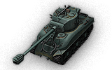
Penetration (mm)
EU  APCR 200 /
APCR 200 /  HEAT 250 /
HEAT 250 /  HE 53 → RU
HE 53 → RU  APCR 236 /
APCR 236 /  HEAT 270 /
HEAT 270 /  HE 53
HE 53
Miscellaneous
View range (m) EU 390 RU 400
M4A1 Revalorisé FL · Tier VIII

Penetration (mm)
EU  APCR 200 /
APCR 200 /  HEAT 250 /
HEAT 250 /  HE 53 → RU
HE 53 → RU  APCR 236 /
APCR 236 /  HEAT 270 /
HEAT 270 /  HE 53
HE 53
Miscellaneous
View range (m) EU 390 RU 400
Panhard AML Lynx 6x6 · Tier VIII
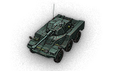
Penetration (mm)
EU  AP 182 /
AP 182 /  HEAT 240 /
HEAT 240 /  HE 75 → RU
HE 75 → RU  APCR 182 /
APCR 182 /  APCR 223 /
APCR 223 /  HE 75
HE 75
Damage (HP)
EU  AP 240 /
AP 240 /  HEAT 240 /
HEAT 240 /  HE 320 → RU
HE 320 → RU  APCR 240 /
APCR 240 /  APCR 240 /
APCR 240 /  HE 320
HE 320
Firepower
Shell velocity (m/s) EU 1 150 RU 1 163
Normalization EU 5 RU 2
Mobility
Weight (kg) EU 8 000 → RU 8 210
Power/weight (hp/t) EU 35.63 RU 34.71
Tank traverse on hard terrain (°/s) EU 36.92 RU 39.07
Tank traverse on medium terrain (°/s) EU 36.92 RU 39.07
Tank traverse on soft terrain (°/s) EU 36.92 RU 39.07
Armor & health
Health EU 1 200 RU 920
Miscellaneous
Stationary camo EU 19.89 RU 18.81
Stationary camo · after firing EU 4.73 RU 4.48
Moving camo EU 19.89 RU 18.81
Moving camo · after firing EU 4.73 RU 4.48
View range (m) EU 330 RU 310
Alternate mode
EU stats · RU statsFirepower
Shell velocity (m/s) EU 1 150 RU 1 163
Normalization EU 5 RU 2
Mobility
Weight (kg) EU 8 000 → RU 8 210
Power/weight (hp/t) EU 41.25 RU 40.19
Tank traverse on hard terrain (°/s) EU 37.05 RU 39.49
Tank traverse on medium terrain (°/s) EU 37.05 RU 39.49
Tank traverse on soft terrain (°/s) EU 37.05 RU 39.49
Armor & health
Health EU 1 200 RU 920
Miscellaneous
Stationary camo EU 19.89 RU 18.81
Stationary camo · after firing EU 4.73 RU 4.48
Moving camo EU 19.89 RU 18.81
Moving camo · after firing EU 4.73 RU 4.48
View range (m) EU 330 RU 310